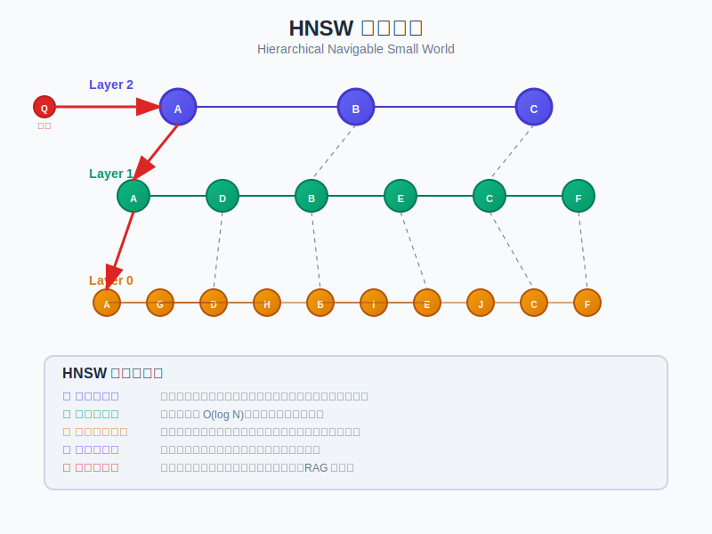

向量索引
向量索引是RAG系统中最常用的索引策略之一，它通过将文本转换为高维向量并构建高效的近似最近邻搜索结构，实现语义相似度检索。

什么是向量索引？
向量索引是一种将文本内容转换为高维向量（通常是几百到几千维）并构建特殊数据结构以支持高效相似度搜索的索引方法。在RAG系统中，向量索引通常基于文本嵌入（Text Embeddings）技术，将文档或文档片段转换为向量表示，然后通过计算向量之间的相似度（如余弦相似度、欧氏距离等）来找到与查询最相关的内容。
常见的向量索引算法
在RAG系统中，常用的向量索引算法主要有以下几种：
HNSW (Hierarchical Navigable Small World)
HNSW是目前最流行的向量索引算法之一，它通过构建多层图结构来实现高效的近似最近邻搜索。
HNSW算法原理
- 多层图结构：HNSW构建了一个多层次的图，底层包含所有节点，上层是下层的稀疏表示
- 小世界特性：每个节点都与其他节点建立"长距离"和"短距离"连接，形成小世界网络
- 贪婪搜索：搜索时从顶层开始，通过贪婪算法逐层下降，最终在底层找到最近邻
HNSW优势
- 搜索复杂度接近O(log n)，远优于暴力搜索的O(n)
- 高召回率，通常能达到95%以上的准确率
- 支持动态添加新向量，无需重建整个索引
- 内存占用相对较小，适合大规模向量集合
HNSW关键参数
- M：每个节点的最大连接数，通常设置为5-100之间，值越大，准确率越高，但内存消耗也越大
- ef_construction：构建索引时的搜索宽度，影响索引质量，通常设置为100-2000
- ef_search：搜索时的候选集大小，影响搜索准确率和速度，通常设置为50-2000
IVF (Inverted File Index)
IVF是一种基于聚类的向量索引方法，它将向量空间划分为多个簇，搜索时只需在相关簇中进行。
IVF算法原理
- 聚类划分：使用K-means等聚类算法将向量空间划分为nlist个簇
- 倒排表：为每个簇维护一个倒排表，记录属于该簇的所有向量
- 两阶段搜索：先找到与查询向量最近的nprobe个簇，然后只在这些簇中搜索
IVF优势
- 搜索速度快，尤其适合大规模向量集合
- 内存占用较小，可处理数十亿级别的向量
- 实现简单，易于理解和调优
IVF关键参数
- nlist：簇的数量，通常设置为向量总数的平方根到向量总数的四分之一
- nprobe：搜索时考虑的簇数量，影响搜索准确率和速度，通常设置为1-100
PQ (Product Quantization)
PQ是一种向量压缩技术，通常与IVF等算法结合使用，可以大幅减少内存占用。
PQ算法原理
- 子空间分解：将高维向量分解为多个低维子向量
- 子空间量化：对每个子空间进行K-means聚类，用聚类中心的索引代替原始子向量
- 距离近似：使用预计算的距离表快速计算近似距离
PQ优势
- 极大减少内存占用，通常可压缩到原来的1/8到1/64
- 支持在压缩空间中直接计算近似距离，无需解压
- 适合超大规模向量集合，可处理数十亿级别的向量
PQ关键参数
- M：子空间的数量，通常设置为4-64
- nbits：每个子空间的量化位数，通常为8位（对应256个聚类中心）
向量索引在RAG中的应用
嵌入模型选择
向量索引的效果很大程度上取决于所使用的嵌入模型。在RAG系统中，常用的嵌入模型包括：
- OpenAI Embeddings：如text-embedding-ada-002，维度为1536
- Sentence Transformers：如all-MiniLM-L6-v2，维度为384
- BGE Embeddings：如bge-large-zh，专为中文优化
- E5 Embeddings：如e5-large-v2，在多种检索任务上表现优异
文本分块策略
在构建向量索引前，需要将文档分割成适当大小的块。常见的分块策略包括：
- 固定大小分块：按字符数或token数固定分割
- 句子分块：按自然句子边界分割
- 段落分块：按段落边界分割
- 语义分块：根据语义完整性动态调整分块大小
- 重叠分块：相邻块之间保留一定重叠，避免信息丢失
相似度度量
向量索引中常用的相似度度量方法包括：
- 余弦相似度：测量向量方向的相似性，对向量长度不敏感
- 欧氏距离：测量向量在空间中的绝对距离
- 点积：对于归一化向量，等价于余弦相似度
- 汉明距离：适用于二进制向量
向量数据库
在实际应用中，向量索引通常通过向量数据库实现。常见的向量数据库包括：
| 向量数据库 | 支持的索引算法 | 特点 |
|---|---|---|
| Faiss | HNSW, IVF, PQ | 高性能，支持GPU加速，内存占用小 |
| Milvus | HNSW, IVF, PQ | 分布式架构，支持混合搜索，高可扩展性 |
| Pinecone | 专有算法 | 全托管服务，易于使用，自动扩展 |
| Weaviate | HNSW | 支持多模态数据，GraphQL接口 |
| Qdrant | HNSW | 支持过滤器，高性能，易于部署 |
| Chroma | HNSW | 轻量级，易于集成，适合原型开发 |
向量索引优化技巧
性能优化
- 降维：使用PCA等技术降低向量维度，减少计算量
- 量化：使用标量量化或乘积量化减少内存占用
- 批处理：批量处理查询，提高吞吐量
- 预热索引：提前加载索引到内存，避免冷启动延迟
- 分片：将大型索引分割成多个分片，分布在不同节点上
质量优化
- 重排序：先用向量索引快速检索候选集，再用更精确的方法重排序
- 多查询扩展：将一个查询扩展为多个相关查询，提高召回率
- 混合检索：结合关键词搜索和向量搜索的结果
- 元数据过滤：使用元数据（如时间、类别等）过滤搜索结果
向量索引的局限性
- 语义理解有限：依赖于嵌入模型的能力，可能无法捕捉复杂语义关系
- 缺乏精确匹配：不适合需要精确关键词匹配的场景
- 维度灾难：高维空间中距离度量的区分度降低
- 资源消耗：高质量索引需要较大内存和计算资源
- 冷启动问题：大型索引首次加载可能较慢
案例研究
案例1：大规模文档库的向量索引设计
对于包含数百万文档的大型知识库，可以采用以下索引策略：
- 使用IVF+PQ组合算法，平衡搜索速度和内存占用
- 设置nlist=10000，nprobe=100，M=16，nbits=8
- 采用分片架构，每个分片包含100万向量
- 实现异步索引更新机制，支持增量更新
案例2：实时问答系统的向量索引优化
对于需要低延迟响应的实时问答系统，可以采用以下策略：
- 使用HNSW算法，优先考虑搜索速度
- 设置M=16，ef_construction=200，ef_search=100
- 预热索引，将整个索引加载到内存
- 实现查询缓存，避免重复计算
- 采用两阶段检索：先快速检索候选集，再精确重排序